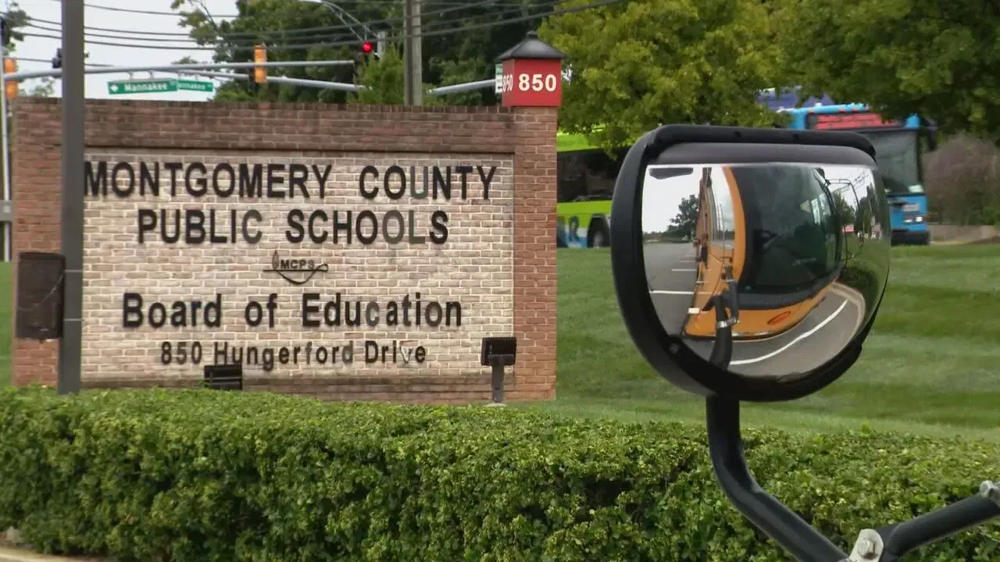
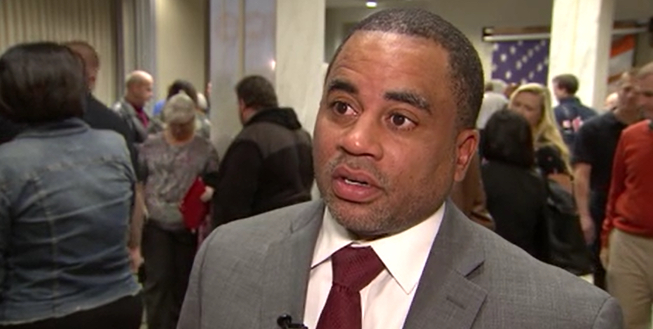

When six Farquhar Middle School educators gathered at a math teacher’s house to keep the party going after a staff happy hour in 2020, they did not invite their principal. But Joel Beidleman showed up anyway, looking for the social studies teacher he had been sexually harassing, according to two witnesses and a complaint the teacher filed with Montgomery County Public Schools. When the door opened, he bellowed her name.
In the living room, Beidleman told her: “You should just f--- me. Everybody thinks you should,” according to the complaint and two of those present. He turned to his co-workers and asked them: “Don’t you think she should just f--- me?” The teacher, who spoke on the condition of anonymity because she fears retaliation from Beidleman and MCPS, quickly left.
The complaint, obtained by The Washington Post, alleges nearly four years of sexual harassment beginning with a 2019 text asking the teacher to meet him at the Gaithersburg Hilton at 11:30 p.m. It is among at least 18 verbal or written reports submitted to the school district about Beidleman by staff members, parents and union stewards since 2016. These and other accounts detail a pattern of harassment, threats, retaliations, workplace bullying and other inappropriate conduct spanning at least 12 years across three campuses, according to documents obtained by The Post and interviews with more than 45 current and former Farquhar staff members and administrators — as well as several teachers who worked for Beidleman when he was an assistant principal at Roberto Clemente Middle School in Germantown and at Lakelands Park Middle School in Gaithersburg. In all, 39 current and former staffers said in interviews that he directly bullied or harassed them. The social studies teacher’s complaint alone, which she filed to the Maryland school system on Feb. 3, alleges 20 instances of misconduct by Beidleman, including a suggestion to “shave your p---- and sell the hair.”
In a lengthy written reply to questions from The Post, Beidleman, 48, defended his career as an innovator and said his passion “has been to inspire children to achieve academically.” He denied many of the allegations in this story. At Clemente and Lakelands, “There were no formal complaints of sexual harassment, threats, retaliation, or workplace bullying or other aggressions,” he said. He pointed to an investigation into the social studies teacher’s complaint, which he said “found insufficient evidence to support allegations.”
After The Post submitted a list of questions last week, MCPS placed Beidleman on “extended leave,” said it wanted staff members who’d been mistreated to come forward and launched “an independent, external investigation about all matters brought to our attention by the Washington Post.” The district said it asked the county’s inspector general to look into the matter, and it pledged in a statement “to provide a safe, supportive, and inclusive learning and working environment.” It said: “We are applying the highest levels of focus and seriousness to the overwhelming allegations surfaced through the Post’s investigation and are acting swiftly to protect our community and our employees.” (Beidleman did not answer questions about the district’s actions.)
Until last week, MCPS treated Beidleman as a rising star. Despite six staff members’ reports to MCPS about his conduct in 2023, officials promoted him in June to run Paint Branch High School in Burtonsville, a position that oversees a larger staff than Farquhar’s and would have raised his salary by $32,000, to $191,000. “Dr. Beidleman has been an outstanding leader, demonstrating unwavering commitment to students, staff, and families,” Jeanie Dawson, an MCPS director of the Office of School Support and Well-Being, announced in a July 5 letter to the Farquhar community. Last Friday, the district announced his leave of absence to members of the Paint Branch community without specifying a reason.
MCPS, which conducted Beidleman’s regular five-year performance review this year, did not answer any further questions about details in this story, including those asking how it tracks reports about misconduct, who is responsible for collecting them and whether Superintendent Monifa B. McKnight is ever informed. Those matters “would be included in our independent external investigation,” a spokesperson said.
Many educators interviewed for this article pointed to Beidleman’s recent appointment as a reason for speaking on the condition of anonymity — citing both a history of retribution by Beidleman for perceived transgressions against him and what they believe is a willingness by the district to protect him. “He is the most vindictive person I’ve ever met,” a Farquhar English teacher said. “Even teachers who left Farquhar are scared of him to this day,” said former Farquhar media assistant Cathy Stanton, who departed MCPS in 2021 because of what she called the school’s “toxic leadership.”
Beidleman commands the respect of some colleagues for his work. Farquhar history teacher Miya Page said that while she was aware of his bullying, she did not personally experience it. “He’s very focused on student achievement and making sure students feel safe, loved and appreciated,” she said. “Whenever I had a concern, I could go to him. He usually took my thoughts and ideas and implemented them. I felt heard with him. I personally had a great time working for him.”
Still, members of the Farquhar community asked MCPS to step in several times, according to documents and interviews. In 2016, a teacher concerned about Beidleman’s behavior said he told two central office officials during their visit to Farquhar: “‘We need help. Something’s not right here.’ I was nervous as hell to even say that to them.” The officials said they would schedule a meeting but never did, according to the teacher and a co-worker who was present for the exchange.
A former MCPS central office employee, who spoke on the condition of anonymity because she feared retribution, said top district officials were aware of Beidleman’s behavior: “Joel has a reputation that follows him wherever he goes. The bad guys always get talked about,” she said. Another former central office staffer, who spoke on the condition of anonymity because she still works in MCPS, confirmed that her colleagues discussed Beidleman’s conduct. “There was always some kind of negative story someone could tell you about Joel,” she said. Beidleman said he was “not aware” of any such conversations in the central office.
Nine staff members who left Farquhar this year told The Post they quit because of Beidleman. “He was a tyrant who tried to force himself on people, whether emotionally, sexually or professionally,” said Ben Israel, the teachers union (MCEA) representative assigned to Farquhar during the 2022-2023 school year. “He was doing very bad things to people.”
Beidleman said in his statement: “Staff leave for various reasons including closer to home, promotion, or change.”
MCPS’s announcement of Beidleman’s new role was especially surprising to the social studies teacher, whose February sexual harassment, workplace bullying and retaliation complaint alleges Beidleman monitored the camera outside her classroom and grilled her when a male colleague visited. He called her repeatedly after 3 a.m. and texted her from a hotel room in 2022 to “Come be with me,” according to screenshots from her phone. Sometimes when she wouldn’t respond, he would tell her: “You are a horrible person. You have lost my trust. You don’t care about anybody besides yourself,” she recalled in the complaint and a witness confirmed in an interview.
Beidleman told her he was jealous of her relationship with another male colleague and, in 2020, he transferred her to a different grade where she wouldn’t work with that colleague, according to the complaint she filed with the MCPS Department of Compliance and Investigations. In January, it alleges and a witness corroborated in an interview, he told her she should “earn back my trust.” In February, the complaint says, Beidleman said her school leadership role was in jeopardy despite, by his admission, no issues with her performance. (The position paid approximately $10,000 more in salary.) Immediately, she had a panic attack, according to three co-workers who assisted her. She then took a medical leave for depression and anxiety. The morning she left, Beidleman warned her in an email about their conversation: “Do not disclose to the rest of the leaders.”
Over her next three days of leave, Beidleman called her five times, according to her T-Mobile records provided to The Post. She said he claimed her absence looked “suspicious.” She reported the calls in her complaint — and verbally that week to compliance coordinator Khalid Walker, the investigator designated to her case. He said they qualified as harassment, according to the teacher and a contemporaneous message she sent a co-worker about the conversation.
But in a short July 26 letter, about a month after Beidleman’s promotion, Walker informed the social studies teacher that MCPS had completed its investigation and concluded that Beidleman did not violate MCPS’s sexual harassment policy. The letter did not mention any of the teacher’s workplace bullying and retaliation claims. It concluded, “MCPS does not condone and will not tolerate acts of disrespect, harassment, or bullying toward any person.”
Walker referred questions from The Post to the MCPS communications department. In answer to the teacher’s allegations, Beidleman cited Walker’s finding and wrote in his statement: “I trust that my organization did their due diligence in investigating challenges presented and I provided my full support.”
The school system seems to have overlooked complaints about Beidleman’s conduct for years. In addition to teachers, parents, too, complained about the principal — particularly after inappropriate remarks to their children. In July 2017, former Farquhar PTA president Chelsea Curtis said she hand-delivered a letter to the central office that carbon-copied the principal to request a change of schools for her younger children after Beidleman told her eighth-grade daughter: “Don’t be like [your friend]. She’s a whore.” MCPS granted the transfer.
Beidleman had a habit of calling girls into his office, recalled former Farquhar science teacher Meghan Maloney, who witnessed it and heard him repeat back their stories on many occasions. “He would ask them questions not just about what they were wearing, but things about other students,” she said. Parent Jenni Coopersmith was so concerned about Beidleman’s frequent “interrogation” of her daughter in 2017 that she hired a lawyer to meet with the principal, according to Coopersmith and emails obtained by The Post.
Beidleman said in his statement that he never meets with students “without my security team, counselors, or other assistant principals in the room.” He added: “The report of calling a student a name is false. No parent has filed a complaint with the school, central office, or sent communication regarding the questions provided to me.”
During two Jan. 31, 2018, assemblies for seventh- and eighth-grade students and staff, Beidleman lamented that Farquhar girls were dressing and acting “like hos and thots” (both derogatory terms for promiscuous women), according to multiple witnesses. Beidleman claimed to The Post: “I did not make that statement. … I cited specific examples of inappropriate words that have been used on social media as well as in our school community.”
More than a dozen teachers in attendance, as well as parent letters and social media posts about the incident, recalled that he indeed used the slurs in reference to Farquhar girls. Michelle Sauer, a student teacher at the time, was “so disgusted by his comments, I slapped my hands down on the table out of shock,” she said. “I looked around at this room full of young, impressionable girls and primarily female teachers trying to maintain composure while the principal’s being so disrespectful and sexist.” Joann Mirgon-Erb, chairperson of that year’s MCPS symposium for 250 high-schoolers who’d expressed interest in becoming educators, heard about Beidleman’s comments. She decided he shouldn’t be allowed to deliver a speech to the group. “This person should not be exposed to students,” she said in an interview.
When parents complained about the assembly, then-Director of School Support and Improvement Eric Minus, Beidleman’s boss, spoke with teachers. One told him about additional instances of workplace misconduct, the teacher said in an interview. But when another tried to do the same, Minus asked to confine the discussion to what Beidleman had said at the assemblies, she said. Several educators were aware that the two men were friends. Faculty who spoke on the condition of anonymity for fear of retribution told The Post that Beidleman openly mentioned his friendship with Minus. A parent, who spoke on the condition of anonymity because her family is connected socially with Beidleman’s, called Minus to complain about the “hos and thots” incident. He laughed it off and said Beidleman “is a close personal friend,” she recalled.
Minus referred questions from The Post to the MCPS communications department.
Many Clemente and Farquhar educators said they feared Beidleman’s reprisals. At least nine Farquhar teachers during the 2022-2023 school year told the union, the Montgomery County Education Association (MCEA), that Beidleman was bullying them, according to Israel. But they declined to file official complaints “for fear of retaliation from Joel, a constant fear that he would sabotage their careers if they said something, put them in a teaching position they didn’t want. For fear that MCPS would protect Joel and work actively to tamp down any complaint against Joel,” Israel said. “They feared MCPS would get that complaint with a name attached and would drag their feet, do their best to not acknowledge the complaint. Which is exactly what happened” with the social studies teacher, he said.
Many staff members said they left their school, MCPS or the teaching profession rather than work with Beidleman. He berated, humiliated or yelled at staff frequently, according to more than two dozen educators. A former Clemente teacher, who said Beidleman targeted her so often she took notes, said she resigned her leadership position to avoid him: “He made my life miserable.” A Lakelands teacher said she left that school because of Beidleman, who on numerous occasions “screamed in my face.” She said: “There are so many MCPS rules he breaks: posting and hiding [job] positions, hiring who he wants, removing who he wants. He got away with everything.” Maloney described Farquhar, from which she often came home crying, as “this culture of fear.”
Beidleman said in his email to The Post that “I have never yelled” and that he did not “disrespect staff members.”
In February 2022, Farquhar math teachers concluded that some students needed grade-level classes, thanks to pandemic setbacks, rather than the advanced classes Beidleman required for every seventh- and eighth-grader. Less than three hours after the department head advocated for the change, Beidleman told her and the leadership team he would remove her from her leadership position and would “be providing you an involuntary transfer letter,” according to emails obtained by The Post. Because of strong support from her department, she was able to keep her job. When she reported the events to Walker this March as part of a workplace bullying complaint, she and a witness said Walker called her retaliation claim a “clear case.”
Nevertheless, Walker denied her claim in an April 4 letter, saying her “allegations did not meet the definition of retaliation or workplace bullying.”
Beidleman told The Post his actions were focused on equity and that he didn’t want an “on-level class overrepresented by students of color.”
Farquhar’s 2022-2023 Staff Climate Survey, which MCPS released in late July, revealed that in answer to the question “How positive is the tone that school leaders set for the culture of the school,” more than 40 percent of surveyed staff answered, “Not at all.” That was the second-worst outcome of any MCPS middle school.
Teachers at Lakelands, Clemente and Farquhar said Beidleman often commented on women’s bodies and outfits. During two annual Farquhar staff presentations about professional attire, he showed a picture of a woman’s midsection in tight leggings and said, “Camel toe is not allowed,” several attendees said. “I have never used the term cameltoe during a presentation to my staff,” Beidleman told The Post. But 24 teachers recalled to The Post that he did.
“He was always commenting on what people look like,” Maloney recalled. “And the opposite: He’d say, ‘Are you okay, because you don’t look your best?’ ‘Are you okay, because you didn’t put on makeup?’” Beidleman told The Post: “I have never commented about a staff member wearing less make-up than usual.”
When a male science teacher told Beidleman his wife was pregnant, the principal replied that his wife would “change for the worse,” the teacher recounted in an email to Walker obtained by The Post. A teacher told The Post that Beidleman said to her in front of a colleague, who confirmed the conversation in an interview: “You look like you peg your husband and that you do butt stuff.” When that teacher disagreed with Beidleman in discussions, she and a witness said the principal told her: “Maybe your husband needs lessons in bed so you can be calmed down.” The comments were memorialized in a list of aggressions toward staff compiled by Farquhar’s building union representative this year.
Beidleman disputed their veracity: “I did not make this comment to a teacher,” his statement said.
In April 2021, Beidleman invited an MCPS teacher who had worked with him previously to apply to be his assistant principal at Farquhar, she said. That month, he began flirting with her, according to screenshots from her phone. (She spoke on the condition of anonymity because she still works for the school district.) He also texted her: “if you want the JOB u got it.” He later suggested that the teacher owed him sexual favors, she said. Over the next several weeks, he sent her sexually suggestive texts, including: “So why cant my lips just get out on that kitty.”
When she repeatedly averred that she didn’t want a sexual relationship, he replied, “Yeah but that sexy be turning me on,” according to screenshots. She worried that telling Beidleman to leave her alone would be “career suicide” because of his MCPS connections, she told The Post. On July 17, 2021, when he spontaneously called to say he was on his way to her house, she told him not to come, according to the teacher and screenshots from her phone. “I have told you… We are friends. Don’t want to blur those lines,” she texted. He texted back: “Thought u were more.” Twelve days later, according to an MCPS Human Resources and Development letter obtained by The Post, she learned she was not accepted into the pool of candidates for any assistant principal job.
Beidleman told The Post the teacher’s candidacy was rejected “prior to any personal conversations.” But screenshots from the teacher’s phone show that he texted personal messages, including lewd ones, to her more than 400 times between the day he asked if she wanted the job and the date she was informed that she would not be considered for the role.
In May 2022, the union informed the district of “egregious reports” of sexual harassment at Farquhar. MCEA’s letter included statements from teachers that Beidleman “engaged in sexual activity with staff,” “looks at my chest all the time,” “made comments about women’s chest sizes,” “frequently looks women up and down,” and suggested a teacher would be flexible in the bedroom. “Despite repeated reports, nothing seems to have been done to address the concerns and protect staff members from this sort of behavior. Because of this, staff are fearful of speaking out publicly because they feel MCPS is protecting this administrator,” MCEA wrote. An official in the district’s labor relations office replied that sexual harassment was “against policy” and that she would forward the letter to the Department of Compliance and Investigations. MCEA confirmed to The Post that MCPS took no action in response.
“I have never reviewed or been asked about a letter sent by MCEA to the district regarding me having sexual activity with staff,” Beidleman said.
Two Farquhar teachers said they reported Beidleman’s conduct in fall 2021 and spring 2022 to Safe Schools Maryland, an anonymous reporting service run by the state that routes reports from Montgomery County to MCPS’s Department of Safety and Security. In May 2022, one of them anonymously emailed Superintendent Monifa McKnight and the school board that Beidleman emotionally abused and sexually harassed staff, according to the letter, which they provided to The Post. To the teachers’ knowledge, the district didn’t address the complaints.
A Farquhar content specialist informed Walker in March that two women in her department had been sexually harassed by Beidleman but were “terrified to say anything.” “There’s a real fear that there’s no one above you that you can go to,” said Jeanne Cashin, a 30-year teaching veteran who said she left Farquhar in June 2021 because of the toxic environment.
Several Farquhar teachers said Beidleman also fostered a drinking culture by pushing staff to attend after-hours events at which he drank excessively and pressured them to drink. At the 2020 house party where Beidleman sought the social studies teacher, attendees took his keys so he wouldn’t drive home drunk, they recalled. (He later thanked them, according to text messages obtained by The Post.) At a 2021 staff party, Maloney told Beidleman she didn’t want a Jello shot because she had to drive home. Beidleman tried to foist the shot on her three times, she said, before asking: “What, are you pregnant?”
“The pressure to drink was relentless,” Cashin agreed.
Beidleman disputed this characterization. “I did not foster a drinking culture. I did not urge staff to attend happy hours,” he said. “I encouraged staff to be collegial and enjoy working together.”
Four Farquhar teachers told The Post they saw Beidleman visibly intoxicated during a 2018 sixth-grade outdoor ed trip. He slurred his words and smelled of alcohol, they said in interviews. The science teacher reported the transgression to an assistant principal at the time and to Walker in a February written statement that the teacher shared with The Post, but he was unaware of any repercussions. Two teachers told The Post that Beidleman came to a fall 2019 student dance in the school cafeteria right after taking several shots at a happy hour. Court records show that Beidleman pleaded guilty to a DUI in December 2013, just months before MCPS appointed him principal of Farquhar.
In his statement, Beidleman said, “I have never been intoxicated at outdoor education or a sanctioned school event.”
Despite the many reports of misconduct, MCPS has continued to propel Beidleman’s career, first promoting him from assistant principal at Clemente to principal of Farquhar before naming him principal of Paint Branch. “It shocked me that [although] he was doing all these things and creating complete havoc at Clemente, he was promoted and they were applauding him for what a great job he had done,” said Joanne, a former Clemente teacher who spoke on the condition that she be identified only by her first name because she said she was bullied by Beidleman.
Summarizing his career, Beidleman said, “I have always been rated as meeting standard or a highly effective principal.”
Following last week’s announcement that MCPS had put Beidleman on extended leave, current and former teachers were surprised and pleased by what they told The Post was a necessary first step. But they were skeptical that their ordeal would improve the district’s workplace bullying reporting procedures. “I’m wary about there being actual consequences for his actions, and worried that the only way MCPS will listen to its staff is if concerns about people in power are publicized,” Maloney said. As the social studies teacher put it, “MCPS has some major explaining to do as to why it took media involvement to do something.”
After this story was published online Friday, administrators at Farquhar and Paint Branch sent nearly identical letters to their communities. They said the district took the allegations seriously and had engaged “an external and independent investigation team with expertise in education and employment law” to examine the claims. Its focus would also be on “processes and protocols concerning documenting, reporting and investigating allegations of bullying or harassment of any kind.”
The social studies teacher said she felt “overwhelmed, defeated and ashamed” by the pattern she’d witnessed for years before Beidleman’s suspension: “I have no power. He’s got all the power and I’m helpless. I felt like my world was crumbling and there was nothing in my control,” she said. MCPS was “willing to let this happen to someone and continue to happen to people. Who is there to help me?” At Farquhar’s end-of-year staff meeting during which teachers gave speeches to honor each departing educator, multiple attendees said there were audible gasps when Beidleman skipped over her name.
Alexandra Robbins, a freelance journalist, is the author of several books about education, the latest of which is “The Teachers: A Year Inside America’s Most Vulnerable, Important Profession.” She has substitute-taught in Montgomery County in a different school cluster from the ones described in this story. Nicole Asbury covers Maryland schools for The Washington Post.